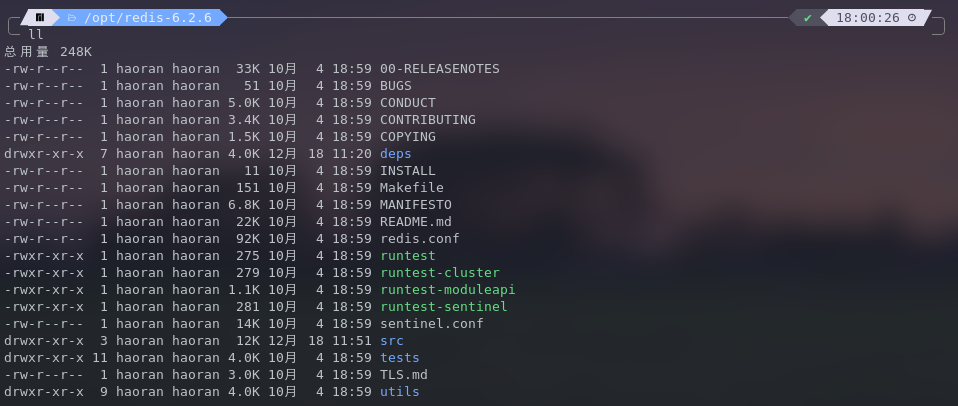
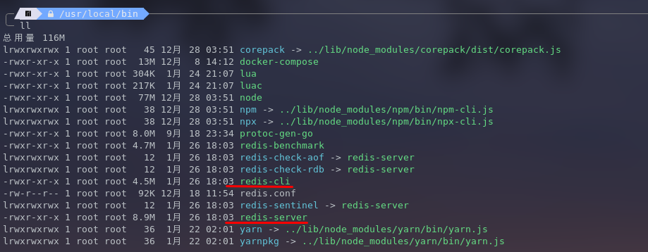

REDIS 安装
Table of Contents
Linux 安装
redis 不建议在 windows 上安装，所以直接在 linux 上安装 redis。
- 可以在 redis 中文网 http://www.redis.cn/ 点击下载安装。
将下载的压缩包解压

- 看到里面有 Makefile 文件，所以运行 make 命令
然后运行 make install 命令，就可以在 /usr/local/bin 下看到安装好的 redis-cli redis-server 等文件了

初次使用 redis
为了方便，我们把下载的压缩包中的 redis 配置文件 redis.conf 复制到 /usr/local/bin 下，因为 redis 默认不是以后台方式启动的，所以通过配置文件将 redis 更改为以后台方式启动。
在 redis.conf 文件里找到下面这行配置，然后将 no 改为 yes，这样就会以后台方式启动了。
# By default Redis does not run as a daemon. Use 'yes' if you need it. # Note that Redis will write a pid file in /var/run/redis.pid when daemonized. # When Redis is supervised by upstart or systemd, this parameter has no impact. daemonize no
cd /usr/local/bin # 进入 redis 所在的目录 ./redis-server ./redis.conf # 通过指定的配置文件启动 redis 服务 ./redis-cli
关闭 redis 使用 shutdown 命令。